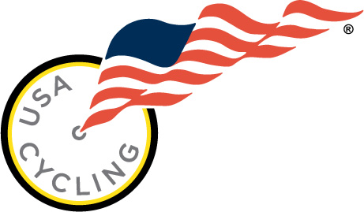
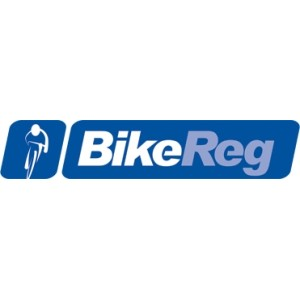

In order to be eligable to race, you must obtain a usa cycling card.
This card is onnly valide up to a year after purchase. On the usa cyling site,
users are able to see all past events as well as the results.

BikeReg is used as the intermediary between an event and the riders. On the BikeReg site, users can find upcoming races and register.
They will handle pre-event communication through the email associated with your account